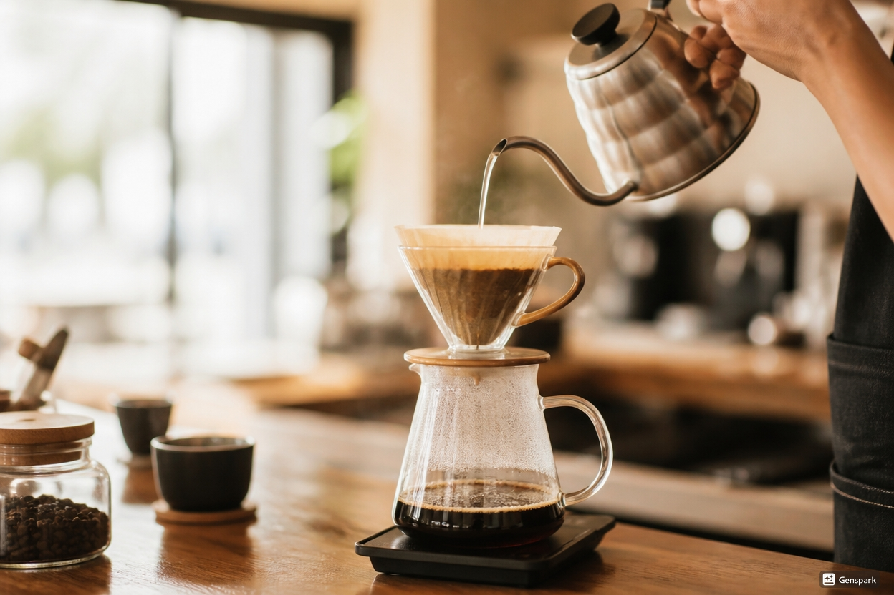
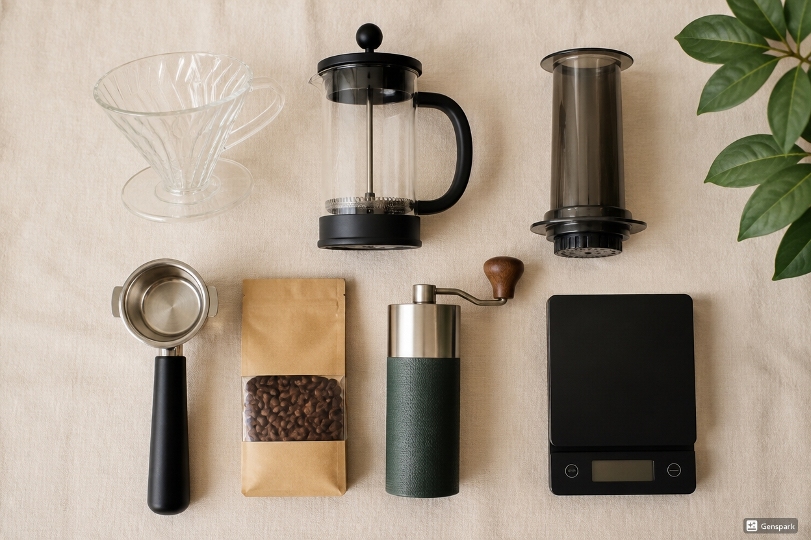
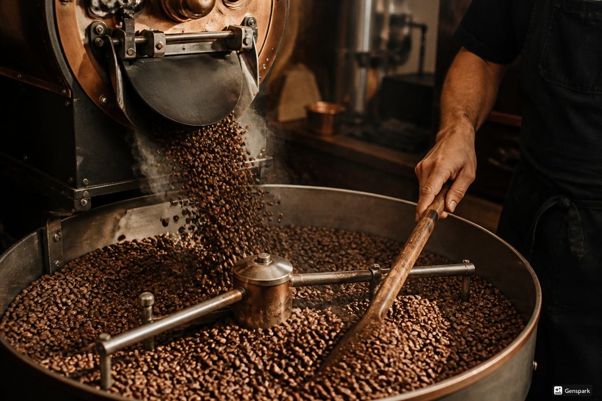
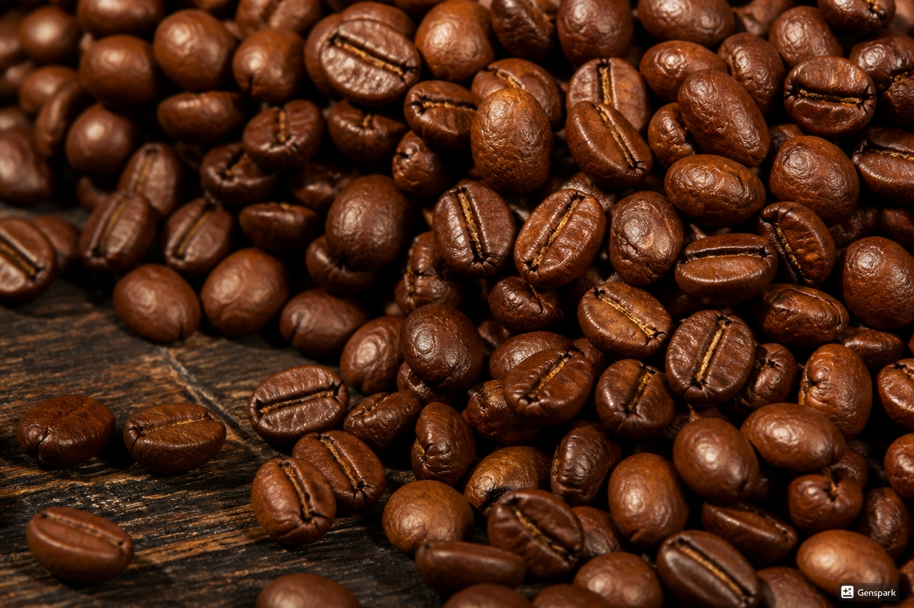

Pour Over
Pour over rewards patience with the cleanest, most aromatic cup. Best with our light roasts — Chikmagalur Estate or the Nilgiri lots.
| Parameter | Recommendation |
|---|---|
| Coffee | 18 g (for one ~300 ml cup) |
| Water | 300 ml at 93°C |
| Grind size | Medium-fine, like coarse sand |
| Brew time | 3 – 3.5 minutes |
Method
- Rinse the paper filter with hot water and discard the rinse water.
- Add 18 g of coffee, level the bed, and tare your scale to zero.
- Bloom: pour 50 ml of water in a spiral, swirl gently, and wait 30–40 seconds.
- Pour the remaining water in slow, steady spirals to 300 ml, keeping the bed level.
- Let it drain fully (target 3–3.5 minutes), swirl the cup, and enjoy.

French Press
The most forgiving brewer there is — full immersion means full body and rich texture. Try it with Araku Valley Medium or Coorg Highlands.
| Parameter | Recommendation |
|---|---|
| Coffee | 30 g (for two cups, 1:15 ratio) |
| Water | 450 ml at 95°C |
| Grind size | Coarse, like sea salt |
| Brew time | 4 minutes |
Method
- Add coffee and all the water at once; stir gently to wet every ground.
- Rest 4 minutes with the lid on, plunger up.
- Break the crust with a spoon and skim the floating foam.
- Wait 3 more minutes, then press slowly — stopping at the surface of the coffee, not to the bottom.
- Pour immediately so it doesn't keep brewing in the beaker.
AeroPress
Quick, portable and endlessly tweakable — the AeroPress is the roastery's favourite travel companion. Great with Coorg Sun-Dried.
| Parameter | Recommendation |
|---|---|
| Coffee | 15 g |
| Water | 220 ml at 90°C |
| Grind size | Medium, like table salt |
| Brew time | About 2 minutes |
Method
- Set up the AeroPress inverted, add coffee and 220 ml of water, stir 3 times.
- Brew for 1 minute 30 seconds.
- Cap with the rinsed filter, flip carefully onto your cup, and press gently for 30 seconds.
- Stop at the hiss. Top up with a splash of hot water if you like a lighter cup.

Espresso
Espresso is a controlled recipe, not a mystery. Start here and adjust one variable at a time. Use Bengaluru Dark or Coorg Highlands.
| Parameter | Recommendation |
|---|---|
| Coffee | 18 g, finely ground (like powdered sugar) |
| Yield | 36 g of espresso out |
| Temperature | 92–94°C |
| Brew time | 25 – 30 seconds |
Method
- Dose 18 g into the basket and distribute the grounds evenly.
- Tamp level and firm — consistency matters more than force.
- Lock in and start the shot immediately; time and weigh it.
- Too fast (under 25 s)? Grind finer. Too slow (over 30 s)? Grind coarser.
- Taste. If it's sour, grind finer; if it's bitter and dry, grind coarser.

Cold Brew
Slow, sweet and smooth — cold brew trades acidity for chocolatey roundness. Chikmagalur Estate makes a beautiful batch.
| Parameter | Recommendation |
|---|---|
| Coffee | 100 g, coarse grind |
| Water | 800 ml, cold or room temperature (1:8) |
| Steep time | 14 – 18 hours in the fridge |
| Yield | About 600 ml of concentrate — dilute 1:1 with water or milk |
Method
- Combine coarse-ground coffee and water in a large jar; stir to wet everything.
- Cover and steep in the fridge for 14–18 hours.
- Strain through a paper filter or fine cloth — twice for a cleaner cup.
- Dilute 1:1 to serve, and keep refrigerated for up to a week.
Brewing Calculator
Enter the number of cups and your coffee-to-water ratio, and we'll do the maths. A 1:16 ratio with 320 ml of water means 20 g of coffee.
For 2 cups, brew 640 ml of water with 40 g of coffee at a 1:16 ratio.